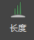
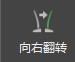

在此部分的示例，将初始“长度”(Length)设定为 0，并将“目标长度”(Goal Length)值设定为所需的样条线长度。这样，样条线将显示在您用笔刷绘制并且具有所设置长度的网格区域内。
- 在“设置”(Settings)部分中，设置下列各项：
- “长度”(Length)设置为 0。
请注意，可修饰样条线不再显示。
- “宽度”(Width)设置为 0.03。
此选项可以将样条线设置为一个适合胡须的宽度。
提示： 若要查看样条线宽度，请将“显示”(Display)设置为“卡片”(Cards)。默认情况下，“显示”(Display)设置为“线”(Lines)，此选项仅显示样条线长度。
- “长度”(Length)设置为 0。
- 若要选择“长度”(Length)笔刷，请单击其图标：。
- 在“长度”(Length)部分中，设置下列各项：
- “增量”(Increment)设置为 0.2。
- “目标长度”(Goal Length)设置为 0.8。
此选项会将样条线长度设置为笔刷绘制区域内的最大值 0.8。
- 用笔刷绘制您希望出现络腮胡的面部区域。 提示： 较大的笔刷区域将会提供更均匀的样条线分布。若要增大或减小笔刷工具的半径，请按住 B 键拖动。
- （可选）若要加快该工作流程，您可以使用网格左侧的笔刷，然后单击“向右翻转”(Flip To Right) 以将笔刷笔划的镜像版本应用于右侧。
- 使用其他修饰笔刷创建所需的角色胡须外观。例如：
- 使用“姿势”(Pose)
 笔刷，以按照笔刷笔划的方向推动样条线。
笔刷，以按照笔刷笔划的方向推动样条线。 - 使用“平滑”(Smooth)
 笔刷在笔刷半径内融合样条线的形状。
笔刷在笔刷半径内融合样条线的形状。
有关每个修饰笔刷的信息，请参见笔刷。
对修饰感到满意后，可以预览修饰的默认样条线版本。
预览和编辑默认的修饰样条线版本 - 使用“姿势”(Pose)